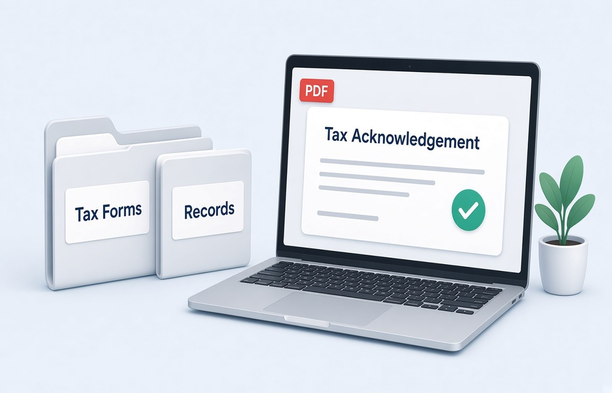

The ITR acknowledgement and Form 16 are the two PDFs people hunt for in July: a visa form, a loan, or a new employer asks, and the files are named download.pdf somewhere in a mailbox. Store them on Windows with the assessment year in the file name, each document separate, in a folder you can open next year. This is a filing habit, not tax planning. It does not change what you owe or what you report. Use the acknowledgement from the filing you submitted and the Form 16 your employer issued. Do not edit figures, and do not create a substitute page if a download failed.
One assessment year, one pair of files
An acknowledgement belongs to one filing year. Form 16 belongs to one financial year from one employer. Put both in a folder named with that year, such as AY-2026-27. Do not drop a new acknowledgement into last year's folder because the Downloads list was sorted wrong. The forms look similar at a glance. Open each PDF and read the year and the name before you file it. If you revised a return, keep the latest acknowledgement and leave the earlier one in an Old subfolder. The revision does not erase the fact that an earlier file existed.
If you had two employers, you may have two Form 16 PDFs. Name them with the employer short name as well as the year. Merging them into one file hides which TDS line belongs to which company when a loan officer asks. Keep them separate. The acknowledgement stays a third file. It is not a wrapper for the Form 16. They answer different requests, and you will often be asked for only one of them.
- Folder name carries the assessment year
- Acknowledgement and Form 16 are different files
- Two employers means two Form 16 names
- Revised return kept, earlier file moved to Old
Names you can find without opening mail
Use plain names: AY2026-27-ITR-Acknowledgement.pdf and AY2026-27-Form16-Employer.pdf. You should be able to attach the right one from a file dialog while a bank executive waits. Avoid ack.pdf, final.pdf, and the portal's default name. If the income-tax download is password protected, the usual key is explained on the portal itself, often a pattern from your PAN and date of birth that the site already told you. Use that published method. If it still will not open, use the portal reset or download again while logged in. Do not try random passwords or a lock removal.
After it opens, check the name and the year on page one, then save the unlocked copy only if you need to mail it to a bank that cannot type the password. Keep the original download too. The copy you send should be the same pages, not a retyped summary. A spreadsheet is not an acknowledgement. If a page failed to download, download again. Do not rebuild the missing page in an editor.
What not to mix into the folder
Rent receipts, investment proofs, and GST filings are useful, but they are not the acknowledgement. Give them their own subfolders so a request for Form 16 does not become a zip of your whole year. Do not append a computation printout to the acknowledgement unless the person who asked for it said to. Extra pages make the receiver wonder if they have the official file. The acknowledgement should look like the file the portal generated.
Do not store two years in one PDF to save space. The next request will name one year, and you will have to split under pressure. Disk space for a handful of PDFs is cheap compared with that scramble. If you need a smaller mail, compress a copy and read the acknowledgement number afterward. Keep the clear original. This habit is storage. It is not a way to present a different income from the one on the form.
A folder that survives the next ask
Once a year, after filing, spend ten minutes and drop the acknowledgement and each Form 16 into that year's folder. Add the AIS or other downloads only if you want them, in a clearly named subfolder. Next time a visa or a lender asks, you attach a file instead of searching mail. Pdf Buddy can export a copy without the portal password after you have opened it with the key the site gave you, and it can compress that copy on the PC. Do not upload these forms to a random locker.
Keep the folder after you leave a job. New employers and loans ask for prior Form 16 files. You are keeping official PDFs you downloaded or received. If an employer has not issued Form 16, ask payroll. Do not draft a lookalike. And do not treat this folder as advice on what to claim or how to reduce tax. Questions about the return itself belong with a chartered accountant or the filing help you already use.
Questions people actually ask
The acknowledgement PDF will not open. What password do I use? Use the opening method printed on the income-tax download page for that file, then save a copy if a bank cannot enter it. If that method fails, download again from the portal while signed in. Do not remove a password you cannot derive from the instructions you were given.
Can I merge Form 16 and the acknowledgement for the bank? Only if the bank's mail asks for one file. Otherwise send the document they named. A merged file is harder to reuse when the next request wants Form 16 alone. Keep the originals separate either way. Name each file with the year.
I cannot find last year's Form 16. Can I recreate it from the slips? Ask the employer or check the portal downloads you are entitled to see. Salary slips are not a Form 16. Do not build a replacement PDF that looks like the employer's form. Store the real file once you have it, under that assessment year.
Save the acknowledgement and Form 16 on the PC under the assessment year. Pdf Buddy, by Easy Peeze Tools, is a Windows desktop PDF editor that works on the PC. These forms are not uploaded to a random website. The free tier is 2 files a day. Pricing starts at ₹149. Look at download.